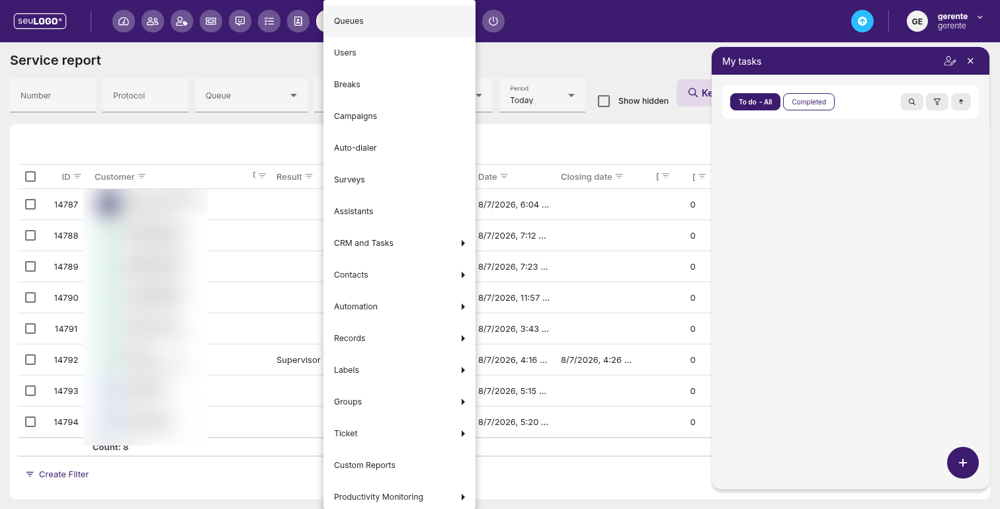
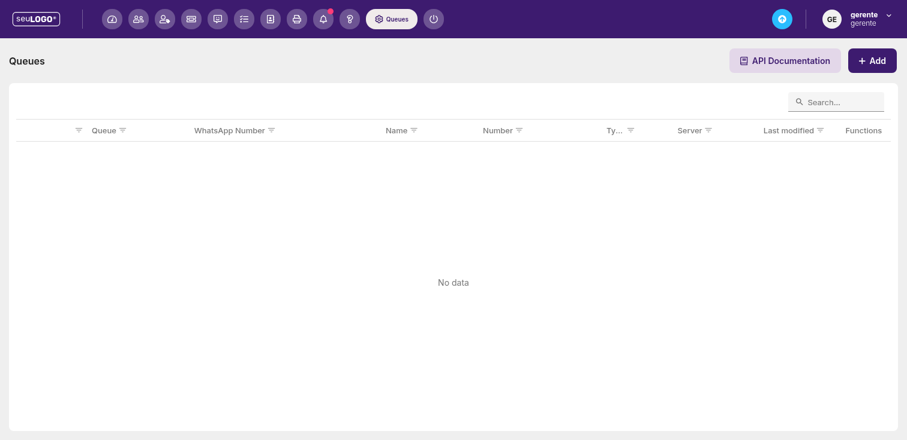
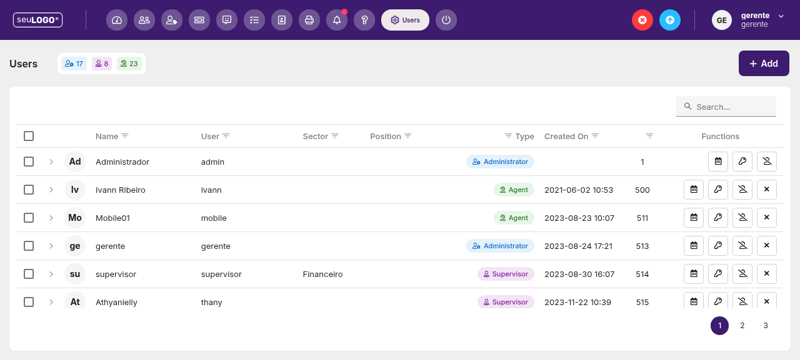
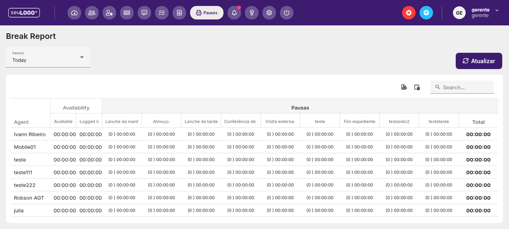
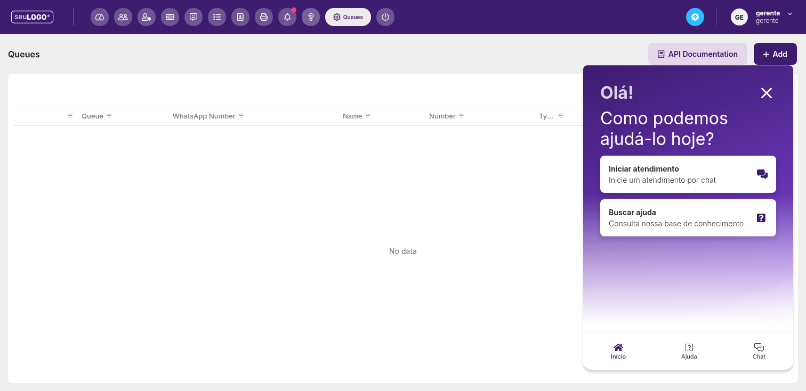

Configurações
Área administrativa da plataforma: filas, usuários, pausas, campanhas, automações e mais.

1. Categorias de configuração
O menu Settings reúne as seguintes áreas (observadas na plataforma):
2. Exemplo: Filas (Queues)
A tela de Queues permite cadastrar e gerenciar as filas de atendimento.

Recursos da tela
- API Documentation — acesso à documentação da API.
- Add — adiciona uma nova fila.
- Search — busca dentro da grade.
Colunas da grade de filas
| Coluna | Descrição |
|---|---|
| ID | Identificador da fila. |
| Queue | Nome da fila. |
| WhatsApp Number | Número de WhatsApp vinculado. |
| Name | Nome associado. |
| Number | Outro campo numérico. |
| Type | Tipo da fila. |
| Server | Servidor associado. |
| Last modified | Data da última modificação. |
| Functions | Ações (editar/excluir). |
4. Usuários (Users)
A tela de Users gerencia as contas da equipe. No topo, três contadores resumem a equipe (ex.: 17 / 8 / 23) e há o botão Add para incluir usuários.

Colunas da grade
| Coluna | Descrição |
|---|---|
| Name | Nome completo (com avatar de iniciais). |
| User | Login / nome de usuário. |
| Sector | Setor (ex.: Financeiro). |
| Position | Cargo. |
| Type | Tipo: Administrator, Supervisor ou Agent. |
| Created On | Data/hora de criação da conta. |
| ID | Identificador do usuário. |
| Functions | Ações: calendário, chave (permissões), perfil, excluir. |
5. Relatório de Pausas (Break Report)
Em Reports › Break Report, há um relatório de tempo de pausa por agente. O filtro Period define o recorte.

A grade lista cada agente e, para cada tipo de pausa cadastrado, o tempo acumulado no período:
- Available e Logged in — tempo disponível e logado.
- Lanche da manhã, Almoço, Lanche da tarde — pausas padrão.
- Conferência de medidas com os colaboradores, Visita externa — pausas operacionais.
- teste, testando2, testeteste, Fim expediente — pausas personalizadas/do ambiente.
- Total — soma do tempo de pausa.
6. Central de Ajuda (Help)

O ícone Help (ponto de interrogação) abre um widget de suporte à direita da tela, com a mensagem “Olá! Como podemos ajudá-lo hoje?” e opções:
- Iniciar atendimento — inicia um atendimento por chat.
- Buscar ajuda — consulta a base de conhecimento.
- Abas Início, Ajuda e Chat na parte inferior.